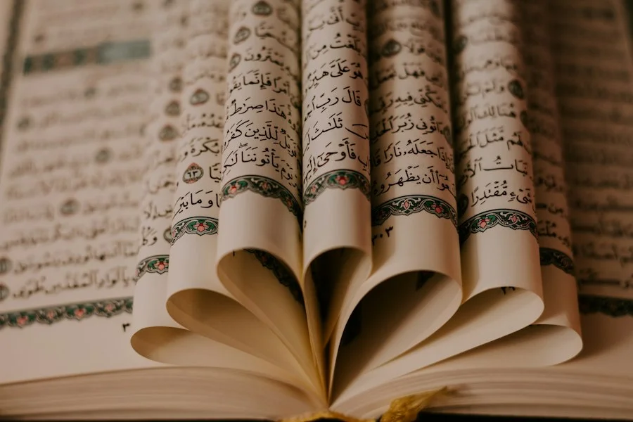

Menyambut kelahiran sang buah hati dengan ibadah aqiqah merupakan bentuk rasa syukur yang agung kepada Allah SWT. Namun, agar ibadah aqiqah bernilai sah dan berpahala sempurna, terdapat ketentuan syar'i mengenai kriteria hewan sembelihan yang wajib dipenuhi.
Hadits Rasulullah SAW Tentang Aqiqah
"Setiap anak tergadai dengan aqiqahnya, disembelihkan (hewan) untuknya pada hari ketujuh, dicukur rambutnya, dan diberi nama." (HR. Abu Dawud, At-Tirmidzi, An-Nasa'i, dan Ibnu Majah).
1. Jenis Hewan yang Diperbolehkan
Ulama sepakat bahwa hewan yang sah digunakan untuk aqiqah adalah golongan hewan ternak berkaki empat (an'am), yaitu domba atau kambing. Baik domba ekor gemuk, domba garut, kambing jawa (kacang), maupun etawa diperbolehkan selama memenuhi kriteria fisik dan usia.
2. Usia Minimal Hewan (Poel)
Sama halnya dengan hewan qurban, hewan aqiqah harus telah mencapai usia minimal yang ditentukan dalam syariat:
- Domba (Kambing Gibas): Minimal telah berumur 1 tahun genap, atau minimal 6 bulan jika berpostur besar dan giginya sudah berganti (al-jadza').
- Kambing Biasa (Kacang/Jawa): Minimal telah berumur 2 tahun genap dan telah memasuki tahun ketiga.
Tanda umum di masyarakat adalah domba tersebut telah mengalami poel, yaitu tanggalnya dua gigi seri depan dan tumbuh sepasang gigi baru yang lebih besar.
3. Bebas dari Cacat Fisik yang Mengurangi Sahnya Ibadah
Rasulullah SAW melarang 4 jenis cacat pada hewan sembelihan:
- Buta sebelah yang jelas (atau buta kedua matanya).
- Sakit yang tampak nyata (demam parah, berpenyakit kulit meluas, atau luka parah).
- Pincang yang jelas (tidak sanggup berjalan bersama kawanannya).
- Sangat kurus hingga tidak memiliki sumsum tulang.
Di Aqiqah Dombastis, setiap domba yang dipersiapkan melalui proses seleksi ketat oleh tim ahli peternakan untuk memastikan fisik domba prima, gemuk, aktif, dan terbebas dari cacat fisik.
4. Bolehkah Menggunakan Domba Betina?
Banyak masyarakat mengira aqiqah wajib menggunakan domba jantan. Namun secara hukum fiqih mayoritas ulama (Jumhur Ulama), domba betina sah digunakan untuk aqiqah, asalkan memenuhi syarat usia dan kesehatan. Domba jantan berstatus afdhol (lebih utama) karena dagingnya umumnya lebih banyak dan bentuk fisiknya lebih gagah.
5. Adab dan Doa Penyembelihan
Penyembelihan wajib dilakukan oleh seorang muslim yang berakal sehat, menggunakan pisau tajam tanpa menyiksa hewan, serta memotong tiga saluran utama di leher: saluran nafas (hulqum), saluran makanan (mari'), dan dua pembuluh darah utama (wadajain).
Saat menyembelih, disunnahkan melafalkan doa khusus:
Disusun oleh Tim Aqiqah Dombastis
Komitmen menghadirkan layanan aqiqah syar'i, higienis & amanah.Pesan Paket Aqiqah
Seluruh domba di Aqiqah Dombastis telah diverifikasi syarat syar'i-nya. Praktis siap santap dengan kemasan bento mewah.
Lihat Pricelist Paket Chat WhatsApp